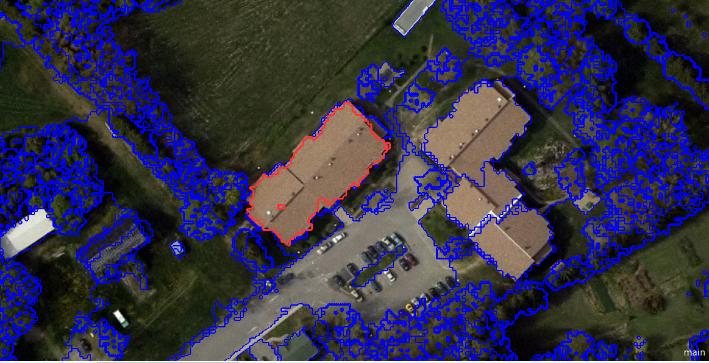
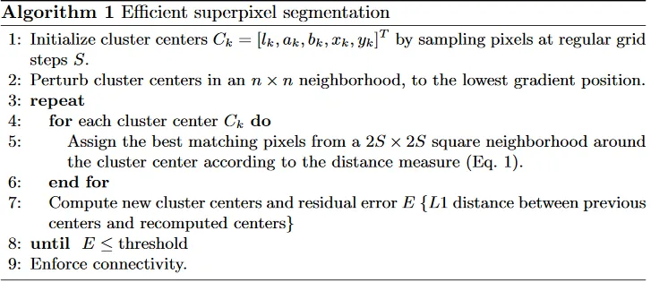
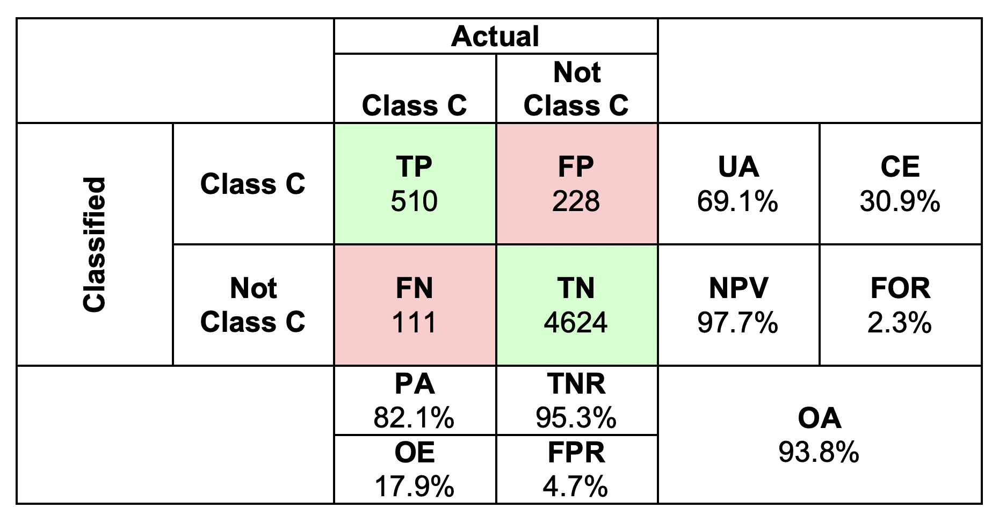
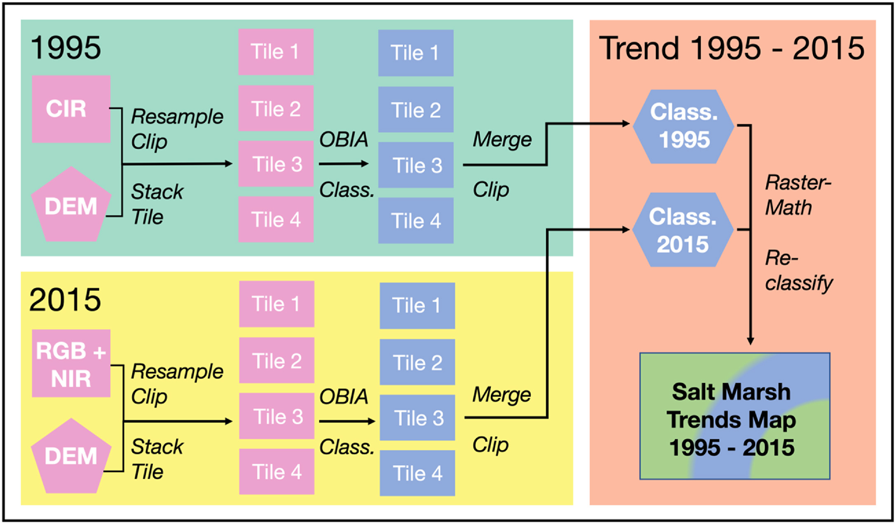
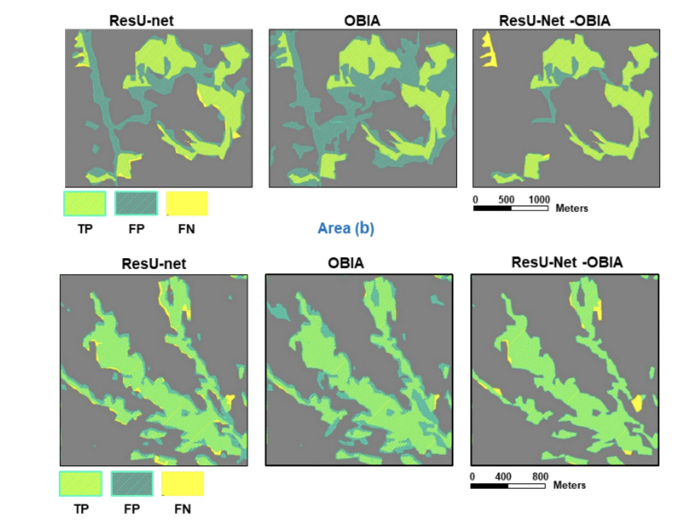

7 WEEK7
7.1 Key Points
7.1.1 Object based image analysis (OBIA)

The classification methods we summarized last week are pixel-based methods. The enormous information of the spectrum can help us tell pixels in different categories. However, there are also some disadvantages of that kinds of methods. One of the most significant is the production of pepper images. In other words, when doing the classification, the pixels are independent to each other, so sometimes the distribution of categories can be fragmented which is not good for spatial analysis.
To deal with this, we need a method that well involved in the structure of the image, consider the similarity (homogeneity) or difference (heterogeneity) of the cells.
Object based image analysis (OBIA) is a way to classification the image. It includes 2 part: segmentation and classification. The first part aims at breaking the image up into objects representing land-based features. And the following one is about classifying those objects using their shape, size, spatial and spectral properties.
So, segmenting the image into objects is the first step.Here we introduce SLIC (Simple Linear Iterative Clustering) Algorithm for Superpixel generation.
A superpixel can be defined as a group of pixels that share common characteristics (like pixel intensity ). Superpixels can provide more information than pixels as pixels belongs to a given superpixel share similar visual properties.
SLIC generates superpixels by clustering pixels based on their color similarity and proximity in the image plane. This procedure of the algorithm can be summarized as shown in the picture below:

7.1.2 Accuracy assessment
It is important to estimate the accuracy of the classification results. No matter what kind of method we use, we have a same way to do the accuracy assessment.
The binary confusion matrix is widely use in all kinds of binary classification problem. It use a 2 x 2 matrix to document the number of cases in different relationship of prediction and actual results. So, this matrix can help us analysis the prediction quality from various perspective.

The picture shows what a confusion matrix looks like. T stands for Ture maens that the predicted result is as same as the actual condition, F for False and vice versa.
Therefore,
- A true positive (TP) is an outcome where the model correctly predicts the positive class.
- A true negative (TN) is an outcome where the model correctly predicts the negative class.
- A false positive (FP) is an outcome where the model incorrectly predicts the positive class.
- A false positive (FN) is an outcome where the model incorrectly predicts the negative class.
Moreover, by counting the sum of the rows and columns of the matrix, the different types of accuracy can be known. For example, the PA Producer accuracy, UA User’s accuracy and OA the (overall) accuracy.
In the remote sensing image classification scenario, most of time we have more than 2 categories, so the matrix maybe 3 x 3 or 4 x 4. But no matter what scale the matrix is, the accuracy assessment are in similar way.
The kappa coefficient is an indicator used for consistency testing and can also be used to measure the effectiveness of a classification. The kappa coefficient is calculated based on the confusion matrix and takes values between -1 and 1, usually greater than 0. The equation and detailed information about kappa coefficient can be find here.
7.1.3 Remote sensing approach and Some problems
Through all the content in week 6 and 7, we can get a conclusion of the basic process of remote sensing clasification, that is:
- class definition
- pre-processing
- training
- pixel assignment
- accuracy assessment
However, there maybe some problems, such as “Spatial autocorrelation between training and test sets” And the best approach is, the (spatial) cross validation.
Cross-validation is a resampling method that uses different portions of the data to test and train a model on different iterations. Therefore, if we are talking about spatial cross validation, it means we use different part of spatial data for training and testing dataset.
7.2 Application
- Image classification
Basically, the Object based image analysis is seen as a way to improve the classification accuracy, especially in those area the composition of land is complex. For example, Krause et al (2021) improved the mapping of coastal slt marsh habitat change using object-based image analysis of high-resolution aerial imagery. The study results shows that the suitability of high-resolution imagery for the detection of open water features. And it also demonstrates the advantage of OBIA.

Here is a workflow of Krause and others’ workflow. After the classification, a change map was carried out to illustrate the trend of salt marsh in the study area. From my point of view, the OBIA integrated the pixel with this feature, so the classified object is bigger than pixel. That could help us observe the different between before and now.
Ghorbanzadeh et al (2022) also applied OBIA to the landslide detection. Intuitive annotation of landslides from satellite imagery is based on distinct features rather than individual pixels. Hence, the study examed the feasibility of the integration framework of a DL model with rule-based object-based image analysis (OBIA) to detect landslides.
- Confusion Matrix
In Ghorbanzadeh’s research, the landslide detection results were validated by measuring the number of pixels allocated as true positive (TP), false positive (FP), and false negative (FN). The picture blow shows the assessment results.

We know that true positive (TP) means an outcome where the model correctly predicts the positive class. So we can compare the light green area to know which algorithm can recognize the most of landslide area. And the same way for FP and FN.
7.3 Reflection
This week we learn another type of classification method in RS, the Object-based image analysis (OBIA). It differs from the pixel-based image analysis as the OBIA pay attention to a group of pixels with the same feature. It is similar to the way people interpret the image visually. Besides, by aggregating the pixel into objects, information beyond the colour can be obtained when classification. Further, OBIA can also avoid the pepper image in the end, which is definitely good for the next analysis.
However, using OBIA means that you need segment the image before carrying out classification algorithm. Therefore, the quality of segmentation well affect the final classification accuracy. Liu et al (2010) stated that there are two main disadvanteges of OBIA, that is, (1) segmentation accuracies decrease with increasing segmentation scales and the negative impacts of under-segmentation errors become significantly large at large scales and (2) there are both advantages and limitations in using object-based classification, and their trade-off determines the overall effect of object-based classification, which is dependent on the segmentation scales.
So, in my opinion, OBIA may improve the classification results in most of cases, but the previous segmentation also increase the risk of mis-classification.
And for the accuracy assessment, I think the Confusion Matrix is a popular and helpful way for people to test the classification results. TF,TP,NF,NP can help us analyse the results in different ways. For example, if we want to recognize the category correctly as much as possible, we should choose the model with the highest TF value. However, if we want to minimize the probability of identifying healthy people as sick people, we need to focus on the FP value.
7.4 Reference
Krause, Johannes R., Autumn J. Oczkowski, and Elizabeth Burke Watson. “Improved mapping of coastal salt marsh habitat change at Barnegat Bay (NJ, USA) using object-based image analysis of high-resolution aerial imagery.” Remote Sensing Applications: Society and Environment 29 (2023): 100910.
Ghorbanzadeh, Omid, et al. “Landslide detection using deep learning and object-based image analysis.” Landslides 19.4 (2022): 929-939.
Liu, Desheng, and Fan Xia. “Assessing object-based classification: advantages and limitations.” Remote sensing letters 1.4 (2010): 187-194.